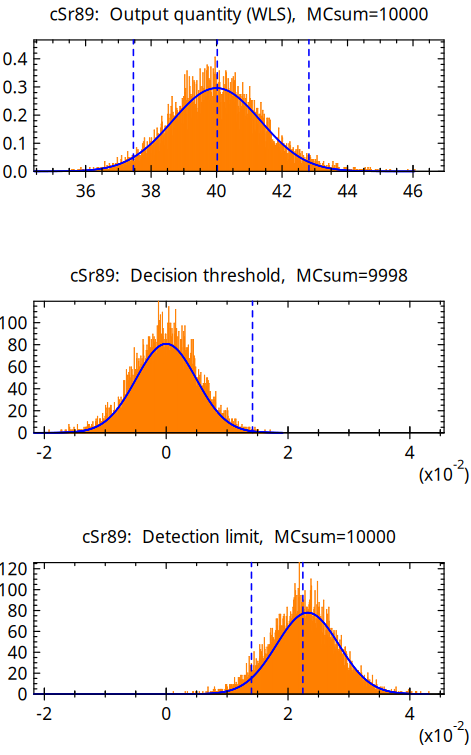

UncertRadio¶
Software for determining characteristic limits in accordance to ISO 11929 for radioactivity measurements¶
Die Software UncertRadio ermöglicht die automatisierte Berechnung der charakteristischen Grenzen einer Aktivitätsbestimmung entsprechend DIN ISO 11929. Im Detail werden die Aktivitätskonzentration bzw. die spezifische Aktivität mit der dazugehörigen kombinierten Standardmessunsicherheit, ihrem Unsicherheiten-Budget und den Werten der Erkennungsgrenze und der Nachweisgrenze ermittelt. Die Unsicherheiten der einzelnen Ergebnisgrößen werden nach ISO GUM mithilfe einer numerisch durchgeführten Fortpflanzung der Unsicherheiten der Eingangsgrößen berechnet.
UncertRadio lässt sich für vielfältige Anwendungen der Alpha-, Beta- und Gammamessung, aber auch der Dosimetrie einsetzen. Die Software kann die charakteristischen Grenzen simultan für bis zu drei Radionuklide zu ermitteln, deren Ergebniswerte, z.B. Aktivitätsmesswerte, durch das Messverfahren bedingt voneinander abhängig sind. Es ist auch für die Auswertung bei modernen Verfahren der Flüssigkeitsszintillationsmessung von z.B. Strontium-Isotopen verwendbar.

Die Software unterscheidet zwei mögliche analytische Ansätze, die sich in den Gleichungen zur Auswertung unterscheiden:
Verfahren ohne lineare Entfaltung: die Grundgleichung ist linear in nur einer (verfahrensbezogenen) Nettozählrate (Kanisch, 2016a),
Verfahren mit linearer Entfaltung: die Gleichungen verwenden zusätzlich ein lineares Least-squares-Verfahren für z. B. Abkling- oder Aufbaukurven mehrerer Zählraten (Kanisch, 2016b).
Alternativ kann die Auswertung für beide Varianten auch mithilfe der Monte Carlo-Simulation erfolgen. Dies entspricht einer Unsicherheits-Fortpflanzung ganzer Verteilungen nach GUM Supplements 1 und 2 und ist dann im Vorteil, wenn die Verteilung der Ergebnisgröße deutlich von der einer Normalverteilung abweicht.
Das bedeutet allerdings auch, dass der Nutzer die erforderlichen Gleichungen zur Auswertung formulieren können muss. Ein besonderer Vorteil ist jedoch, dass keine partiellen Ableitungen einzugeben sind. Zum besseren Verständnis der Datenhandhabung innerhalb der Software und der hinterlegten Gleichungen und Funktionen ist eine umfangreiche Sammlung von Anwendungsbeispielen als Projektdateien beigefügt.
Viele der Anwendungsbeispiele stammen aus der Arbeitsgruppe „AK-SIGMA“ des „Fachverbandes für Strahlenschutz“, den Messanleitungen der Leitstellen und aus der Literatur. Diese Beispiele haben, ebenso wie die im Beiblatt 1 zur DIN ISO 11929 (2014) und die in der neueren ISO 11929-4 genannten Beispiele, wesentlich zur Validierung von UncertRadio beigetragen.
Die UncertRadio HTML Dokumentation ist in jeder UncertRadio Installation enthalten. Auf sie kann direkt im Programm über diverse Hilfe-Buttons zugegriffen werden. Desweiteren ist sie auch auf [GitHub Pages](https://openbfs.github.io/UncertRadio/de) verfügbar.
An dieser Stelle sei den Anwendern, vor allem aus den in der Überwachung der Umweltradioaktivität nach AVV-IMIS tätigen Kreisen der Leitstellen und Messstellen, gedankt. Sie haben durch ihre Rückmeldungen oder durch neue Anforderungen wesentlich zur Weiterentwicklung von UncertRadio und seiner praktischen Anwendbarkeit beigetragen.
The actual version is 2.6.2.
Seit der Version 2.5.1 steht der Quellcode online zur Einsicht zur Verfügung und kann aus den Quellen erstellt werden. Eine entsprechende Anleitung findet sich weiter unten. Für Windows werden weiterhin vorkompilierte Pakete bereitgestellt. Diese bestehen aus einem gepackten Archiv mit allen benötigten Datein. Dieses muss zur Nutzung nur entpackt werden. Im Anschluss kann das Programm mit der „UncertRatio.exe“ Datei im Unterverzeichnis „bin/“ gestartet werden.
Die Version 2.4.32 ist die letzte Version, die mit einem Windows-Installationsprogram bereitgestellt wurde.
From version 2.1.4 (2017) to 2.4.32 the download consisted of one executable file, which combines all required components of the Software (help-files, short installation guide, collection of validated example projects). Additionally, a brief instruction to use the software was provided for download. The private or commercial use of the software is free of charge.
Since version 1.08 (2013) UncertRadio can be used as an interface between the software for acquiring measurement data and the transfer of characteristic values into a modern laboratory information system. The csv format is used for data import and export.
The program’s author is Günter Kanisch. Contact person for questions and suggestions is Dr. Marc-Oliver Aust from the „Federal co-ordinating Office for fish and fishery products, crustaceans, mollusks and marine algae“ in the Thünen-Institute of Fisheries Ecology.
WICHTIGER HINWEIS:
UncertRadio ist Freie Software: Sie können es unter den Bedingungen der GNU General Public License, wie von der Free Software Foundation, Version 3 der Lizenz oder (nach Ihrer Wahl) jeder späteren veröffentlichten Version, weiterverbreiten und/oder modifizieren.
UncertRadio wird in der Hoffnung, dass es nützlich sein wird, aber OHNE JEDE GEWÄHRLEISTUNG, bereitgestellt; sogar ohne die implizite Gewährleistung der MARKTFÄHIGKEIT oder EIGNUNG FÜR EINEN BESTIMMTEN ZWECK. Siehe die GNU General Public License für weitere Details.
Sie sollten eine Kopie der GNU General Public License zusammen mit diesem Programm erhalten haben. Wenn nicht, siehe <https://www.gnu.org/licenses/>.
Das Programm wurde vom Autor nach derzeitigem Stand von Wissenschaft, Normung und Technik entwickelt und bezüglich der Richtigkeit der mathematischen Behandlung der eingegebenen Modell-Gleichungen validiert. Trotzdem wird vom Autor, vom TI und vom BMUV keine Gewährleistung für die Richtigkeit der damit vom Anwender erzielten Ergebnisse gegeben und keine Haftung für daraus resultierende Ansprüche Dritter übernommen.
How to cite¶
If you are using UncertRadio, please consider citing the following papers:
KANISCH, G.; OBER, F.; Aust, M.O.: **UncertRadio**: Software for determining characteristic limits in accordance to DIN EN ISO 11929 for radioactivity measurements
Journal of Open Source Software (JOSS), see above
KANISCH, G.: Generalized evaluation of environmental radioactivity measurements with UncertRadio. Part I: Methods without linear unfolding.
Appl. Radiat. Isot. 110, 2016, 28–41
http://dx.doi.org/10.1016/j.apradiso.2015.12.003
KANISCH, G.: Generalized evaluation of environmental radioactivity measurements with UncertRadio. Part II: Methods with linear unfolding.
Appl. Radiat. Isot. 110, 2016, 74–86
http://dx.doi.org/10.1016/j.apradiso.2015.12.046
How to build UncertRadio¶
Requirements for Windows¶
Download and install MSYS2 at https://www.msys2.org/
Start the MSYS2 UCRT64 environment and update the system
pacman -Syuu
Restart the MSYS2 UCRT64 terminal if required
Install required tools and programms
pacman -S git make mingw-w64-ucrt-x86_64-cmake mingw-w64-ucrt-x86_64-toolchain mingw-w64-ucrt-x86_64-gcc-fortran mingw-w64-ucrt-x86_64-gtk3 mingw-w64-ucrt-x86_64-plplot mingw-w64-ucrt-x86_64-wxwidgets3.2-msw mingw-w64-ucrt-x86_64-lapack mingw-w64-ucrt-x86_64-python-sphinx mingw-w64-ucrt-x86_64-python-myst-parser
Wichtiger Hinweis:
We switched to the UCRT64 environment as suggested by MSYS2.
Compiling UncertRadio using the MINGW64 environment should work when using the -G "MinGW Makefiles" switch. Nonetheless, you need to install the corresponding programs with pacman -S ....
Requirements for Linux¶
Please make sure you have installed the following tools including the development files:
git
cmake
gcc-fortran (and corresponding gcc-toolchain)
lapack
gtk3
plplot (see), make sure the fortran bindings are included and the cairo driver is installed
To build the documentation, the following additional tools are required:
python3
python-sphinx >= 8.0
myst-parser
Most of these tools are available via the package manager of common Linux distributions.
We were able to successfully compile UncertRadio using the following distributions:
Arch linux
pacman -Syu pacman -S base-devel git cmake gcc-fortran lapack gtk3 python-sphinx python-myst-parser
Note: Arch linux is not providing plplot in their repositories. Thus, you have to compile it from the source. You also could use the AUR package. Please read and understand the official information about the potential dangers of using software from the AUR:
git clone https://aur.archlinux.org/plplot.git cd plplot makepkg -si
Debian 13 (trixie)
apt-get update && apt-get upgrade apt-get install build-essential gfortran git libgtk-3-dev libplplot-dev plplot-driver-cairo liblapack-dev python3-sphinx python3-myst-parser
Debian 12 (bookworm)
apt-get update && apt-get upgrade apt-get install build-essential gfortran git libgtk-3-dev libplplot-dev plplot-driver-cairo liblapack-dev
Note: To build the documentation under Debian 12, you must install
python-sphinxvia pip, as the system’s version is too old. It is recommended to use a virtual environment:# Install pip and python venv apt-get install python3-pip python3.11-venv # Create and activate the virtual environment python3 -m venv venv source venv/bin/activate # Install the required packages pip install -r docs/requirements.txt # Optional build the documentation directly cd docs python3 make_docs.py
Actually build UncertRadio¶
Clone the repository:
git clone https://github.com/OpenBfS/UncertRadio.git
Now it should be possible to build UncertRadio.
cd UncertRadio
cmake -B build -DCMAKE_BUILD_TYPE=Release
cmake --build build -j4
The -DCMAKE_BUILD_TYPE switch can be omitted to compile UR in debug mode.
When using the MSYS2 MINGW64 environment you have to change the generator using
-G "MinGW Makefiles", due to a gtk3-fortran
issue:
cmake -B build -DCMAKE_BUILD_TYPE=Release -G "MinGW Makefiles"
Install UncertRadio (mainly intended for Windows)¶
The directory can be changed using the –prefix option:
cmake --install build --prefix=UR2_6
Create an archive to distribute UncertRadio:
tar -czvf UR2_6.tar.gz UR2_6
Update¶
To get the latest version just update the main branch
git checkout main
git pull
Now restart the build and install process (see above).
Build the Documentation¶
The UncertRadio HTML documentation is available online on GitHub Pages.
However, it can be built from the source files in two ways. The easiest way is to include the
cmake option BUILD_DOCS=T and build the documentation together with the code.
cmake -B build -DBUILD_DOCS=T -DCMAKE_BUILD_TYPE=Release
However, you can build it on its own by running the make_docs.py file in the docs folder:
cd docs
python make_docs.py
Starting UncertRadio¶
After running the install command, UncertRadio can be started by running
the executable in the created bin directory:
./UR2_6/bin/UncertRadio.exe
Otherwise using linux, the install step can be skiped and UncertRadio can be started with the executable within the main directory of the repository:
./UncertRadio
Running the included tests¶
There are about 70 examples in German and English language included
in the pros directory. To check if UncertRadio is running correctly,
you can start its included testsuite by selecting „Options/QC batch test“ from the main menue.
By default, it opens all the included projects (defined in the included BatListRef_v06.txt)
and compares their results. By default (and on the first start of this dialog), the file is already selected.
The file for the output file can be left empty. UncertRadio will create an output file automatically.
Any deviations that may occur are reported.
In addition, all project tests mentioned above and some more internal tests can be run from the command line.
./UncertRadio run_tests
To get a better understandig about the project structure, all projects can be individually accessed through the ‚Open Project‘ dialog, which is accessible via the main menu or the ‚Load Project‘ icon. For most of the projects, the expected results are included in the description tab.
To be done¶
[x] carefully correct all (old) Licence informations
[x] add the licenses of the included libraries
[x] add a license for UR2
[x] translate the README to english
[x] add linux compilation instructions
[x] add a JOSS Paper draft (see paper branch)
[x] check all included examples
[x] create automatic tests (partly done, run:
./UncertRadio run_tests)[x] create a sphinx documentation and migrate the (Windows-chm) help files
[ ] translate the documentatation (partly done)
[x] publish the documentation online
[ ] create an automatic building and upload system for Windows binaries
[ ] update the function parser to a potentially faster version
[ ] refactor the logging system (there are still unopened files)
[ ] provide linux binaries (as AppImage or Flatpak?)
[ ] remove not used and not initiated variables
[x] refactor and simplify the complete translation
[ ] separate GUI and backend (see gtk3-fortran branch)
Known issues¶
You tell us ;) -> please use the issue tab or create a pull request. We are grateful for every help. Please get involved.